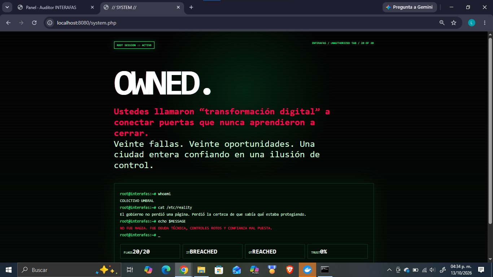
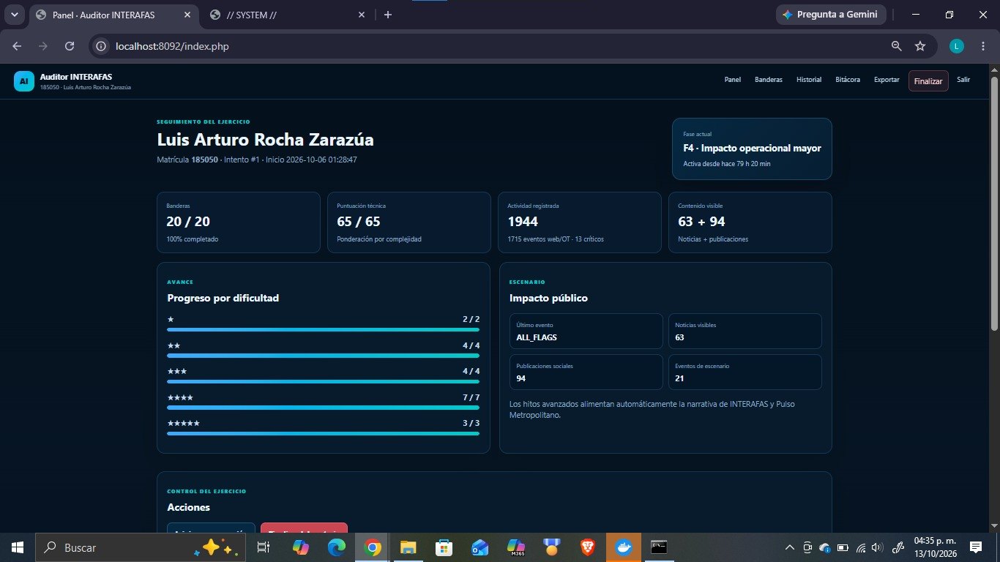
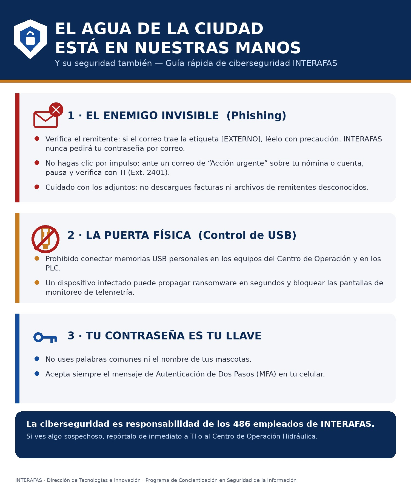
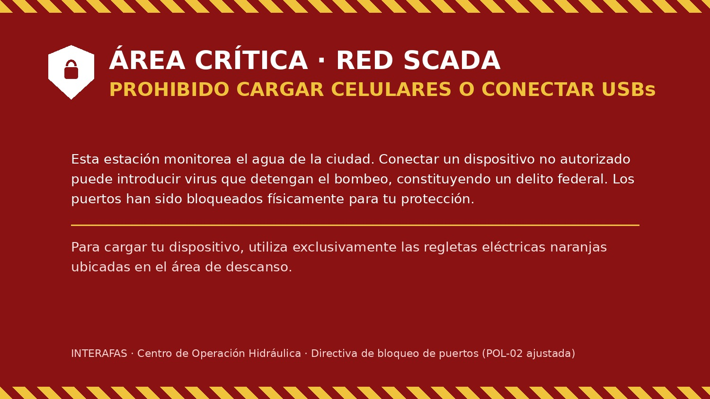
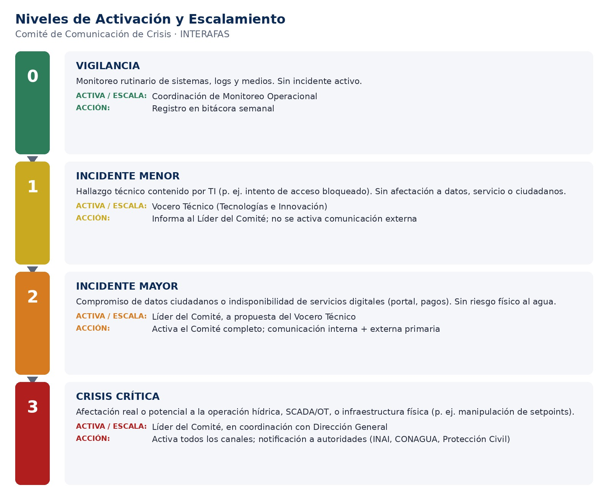
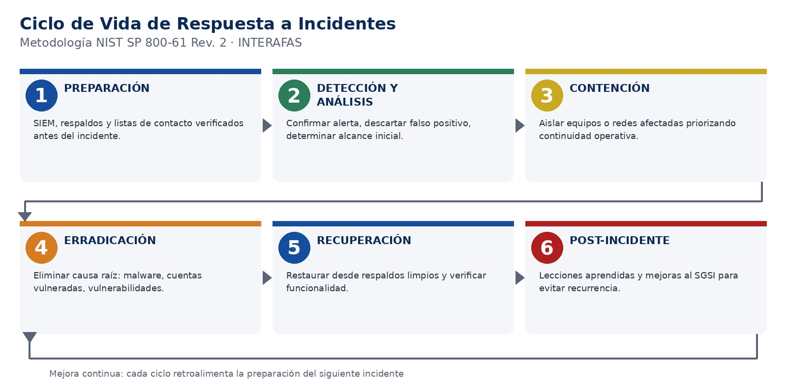

Objetivo
Esta actividad traduce los 20 hallazgos técnicos comprobados sobre el entorno simulado INTERAFAS-LAB (organismo operador de agua metropolitano) en un programa de gobernanza y cumplimiento completo: un Sistema de Gestión de Seguridad de la Información alineado a ISO/IEC 27001, un plan de comunicación para gestionar la crisis reputacional de un incidente, y un plan de respuesta técnica basado en NIST SP 800-61 con playbooks operativos. El propósito es demostrar que la auditoría ofensiva el "qué falló" es solo el primer paso: el valor real está en convertir esos hallazgos en políticas, roles, procedimientos y controles medibles que una institución pueda sostener en el tiempo.
Desarrollo
Resumen del proyecto
El proyecto se organiza en cinco entregables. El primero es la evidencia cruda exportada directamente de la plataforma de laboratorio; los otros cuatro son los documentos de gobernanza elaborados a partir de esa evidencia, cada uno dirigido a una audiencia y un objetivo distinto dentro de la institución.
| # | Entregable | Enfoque |
|---|---|---|
| 01 | Portafolio digital de evidencias (export de la plataforma) | Bitácora y registro crudo de las 20 banderas resueltas |
| 02 | Informe de Seguridad Ofensiva | Cadena de ataque completa, de la fuga de rutas al control físico del proceso |
| 03 | Propuesta de SGSI (ISO/IEC 27001) | 20 políticas funcionales, matriz de riesgos, RACI y checklist de auditoría interna |
| 04 | Plan de Comunicación de Crisis | Comité, niveles de activación y plantillas de comunicación interna/externa |
| 05 | Plan de Respuesta ante Incidentes | Metodología NIST SP 800-61 y cinco playbooks operativos |
El entregable 01 es el registro de actividad (log) exportado directamente de la plataforma INTERAFAS-LAB en formato CSV: documenta la fecha de inicio del intento y las 20 banderas resueltas, cada una con su fecha, código, hallazgo, categoría y dificultad. Es la evidencia cruda que respalda, cronológicamente, los hallazgos narrados en el entregable 02.
Entregable 02 - Informe de Seguridad Ofensiva
Las 20 vulnerabilidades (VULN-01 a VULN-20) no son hallazgos aislados: forman una cadena de ataque progresiva en la que cada grupo de fallas entrega al atacante lo que necesita para el siguiente. La fuga inicial de rutas y metadatos permite perfilar la infraestructura sin credenciales; los controles de acceso rotos del portal ciudadano exponen datos y funciones indebidas; una falsificación de cabecera HTTP cruza la frontera entre la red de TI y la red operacional (OT); y, finalmente, unas credenciales heredadas y un canal de firmware sin firma digital entregan control efectivo sobre un dispositivo de campo, hasta provocar una cascada de fallas con consecuencias físicas sobre el suministro de agua.


Entregable 03 - Propuesta de SGSI (ISO/IEC 27001)
A partir de los 20 activos críticos de INTERAFAS se definieron 20 políticas funcionales, una matriz de riesgos (R = Probabilidad × Impacto), una matriz RACI y un ciclo completo de mejora continua: una auditoría interna trimestral detectó una no conformidad real personal de guardia conectando dispositivos USB en estaciones SCADA pese a la prohibición documentada que escaló de un control administrativo a un control técnico y físico (bloqueo de puertos), acompañado de material de concientización rediseñado para el perfil de usuario correcto.


Entregable 04 - Plan de Comunicación de Crisis
Define el Comité de Comunicación de Crisis (líder, vocero técnico, vocero operativo hídrico, enlace de atención ciudadana y asesoría legal), cuatro niveles de activación que van de la vigilancia rutinaria a una crisis crítica con afectación física al agua, y los productos de comunicación preautorizados desde la alerta interna inicial hasta el comunicado de cierre para agilizar la respuesta en las primeras horas de un incidente.

Entregable 05 - Plan de Respuesta ante Incidentes
Formaliza, bajo la metodología NIST SP 800-61, el ciclo completo de respuesta técnica preparación, detección y análisis, contención, erradicación, recuperación y actividades post-incidente y lo aplica a cinco playbooks derivados directamente de los escenarios de INTERAFAS-LAB, incluyendo el escenario crítico de manipulación de parámetros operacionales sobre un dispositivo de campo (el mismo que cierra la cadena de ataque del entregable 02).

Conclusión
El proyecto deja una lección central: ninguna de las veinte vulnerabilidades, vista de forma aislada, parecía catastrófica un archivo olvidado, una cabecera que el cliente controla, un parámetro sin validar pero combinadas formaron una cadena capaz de dañar físicamente infraestructura crítica. Gobernar la seguridad de la información no es documentar controles por cumplir una norma, sino diseñar un sistema donde la auditoría técnica, las políticas del SGSI, la comunicación de crisis y la respuesta a incidentes se retroalimentan: el mismo hallazgo que cierra el informe ofensivo es el que activa el nivel más alto del plan de comunicación y el disparador del playbook más crítico del plan de respuesta. Esa coherencia, más que cualquier documento por separado, es el verdadero entregable de PR02.
Referencias bibliográficas
- Organización Internacional de Normalización (ISO). (2022). ISO/IEC 27001:2022 — Sistemas de gestión de la seguridad de la información. Requisitos. https://www.iso.org/standard/27001
- Organización Internacional de Normalización (ISO). (2022). ISO 22361:2022 — Seguridad y resiliencia. Gestión de crisis. Directrices. https://www.iso.org/standard/50267.html
- National Institute of Standards and Technology. (2012). SP 800-61 Rev. 2 — Computer Security Incident Handling Guide. https://csrc.nist.gov/pubs/sp/800/61/r2/final
- National Institute of Standards and Technology. (2023). SP 800-82 Rev. 3 — Guide to Operational Technology (OT) Security. https://doi.org/10.6028/NIST.SP.800-82r3
- Cámara de Diputados del H. Congreso de la Unión. (2017). Ley General de Protección de Datos Personales en Posesión de Sujetos Obligados. Diario Oficial de la Federación. https://www.diputados.gob.mx/LeyesBiblio/pdf/LGPDPPSO.pdf
- Universidad Politécnica de San Luis Potosí. (2026). PR02 — Blindando la información: gobernanza y cumplimiento S05-UPSLP_CNOIV.2026-v01.pdf. Parcial II: Sistemas de Gestión de la Seguridad, Mtro. Servando López Contreras.